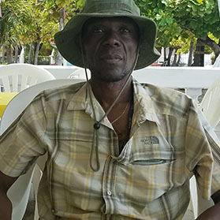
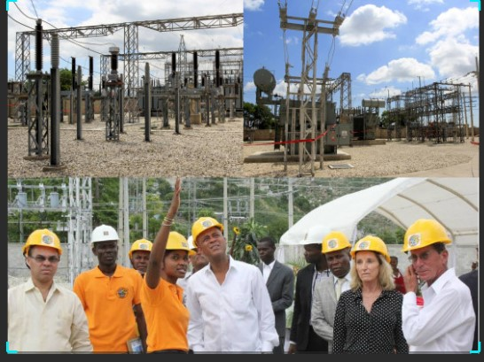

About Michel Patrick Mathurin
Can you tell us about your background and how you ended up in the energy sector?
I was born and raised in Cabaret, Haiti, where I developed a love for my country's natural resources. My interest in mechanics and energy started in school, leading me to pursue a degree in mechanical engineering.
What inspired you to choose mechanical engineering as your career path?
I have always been fascinated by how things work, and I enjoy solving complex problems
How did your journey at Electricity of Haiti begin?
I joined Electricity of Haiti while completing my degree. I was motivated by the opportunity to contribute to my country's development and improve energy access for our communities.
What motivated you to become the production director at Electricity of Haiti?
I wanted to ensure we implement sustainable solutions to enhance energy efficiency and reliability. What are some of the challenges you face as a production director?
One of the primary challenges is managing limited resources while meeting the growing demand for electricity. Why did you choose to work for Electricity of Haiti instead of a private company that may offer higher pay? Serving my country and contributing to its development far outweighs financial considerations. How do you envision the future of energy in Haiti? I envision a future where Haiti leverages renewable energy sources, such as solar and wind, to achieve energy independence What advice would you give to young Haitians interested in pursuing a career in engineering? I encourage them to stay curious and never stop learning. What are some initiatives you are currently working on at Electricity of Haiti? We are focusing on upgrading our facilities and investing in technology that improves energy production efficiency How do you stay motivated in such a demanding role?
Every improvement we make in energy access and production encourages me to keep pushing forward, knowing that our work has a direct impact on people's lives.